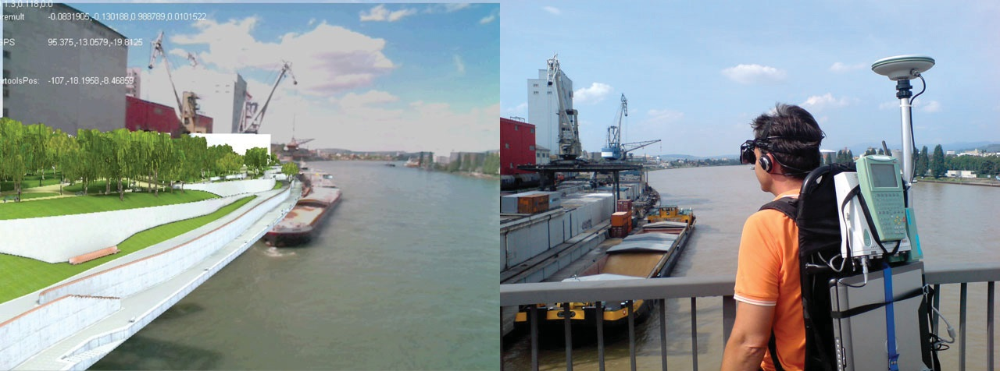
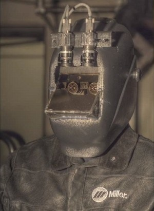
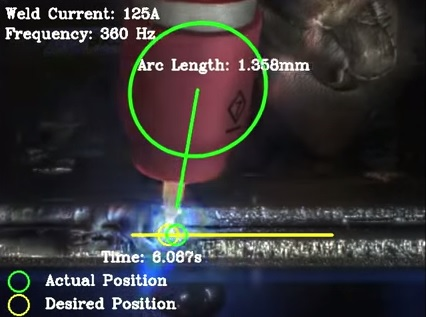
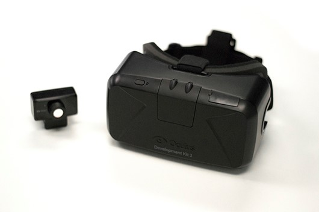
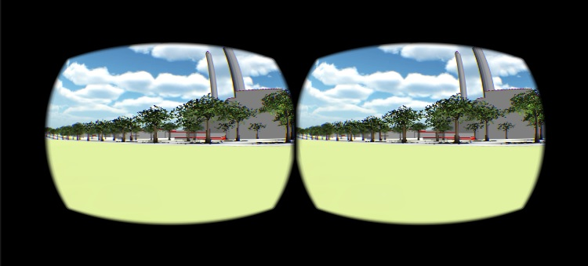
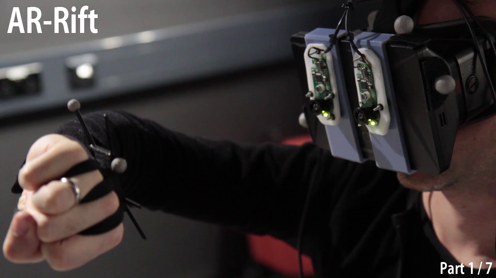

Augmented Reality: Immersionsszenarien, Technologien und Fallstudie
Bachelorarbeit 'Immersiv Augmented Reality'
Maurus Dähler
,
Vortragsfolien, Arbeit und Sourcecode der entwickelten Programme befinden sich auf
https://github.com/X-Hades-X/ImersivAugmentedRealityGliederung
- Hintergründe zu Virtual und Augmented Reality
- Übersicht ausgewählter VR/AR Projekte
- State of the art VR/AR-Technologie
- Entwicklung mit SketchUp, Unity und Oculus Rift
Hintergründe zu Virtual und Augmented Reality
''Virtual Reality (VR) refers to the use of three-dimensional displays and interaction devices to explore real-time computer generated environments.''
Steve Bryson
Call for Participation 1993 IEEE Symposium on Research Frontiers in Virtual Reality
Call for Participation 1993 IEEE Symposium on Research Frontiers in Virtual Reality
Hintergründe zu Virtual und Augmented Reality
''Virtual Reality refers to immersiv, interactive, multi-sensory, viewer-centered, three-dimensional computer generated environments and the combination of technologies requiered to build these environments.''
Carolina Cruz-Neira
SIGGRAPH '93
SIGGRAPH '93
Wie wird Immersion gesteigert?
- Sinneseindrücke möglichst durch den Computer generieren
- Möglichst viele Sinne sollen angesprochen werden
- Die Ausgabegeräte sollen den Nutzer vollständig umgeben
- Die Ausgabegeräte sollen eine "lebendige" Darstellung bieten
Mel Slater, Sylvia Wilbur
A Framework for Immersive Virtual Environments, 1997
A Framework for Immersive Virtual Environments, 1997
Vorstellung ausgewählter Projekte
LifeClipper2

Schweissmaske der Zukunft
 
State of the art VR/AR-Technologie
- Video See-Through
- Optisches See-Through
- Projektionsbasierte AR
Oculus Rift

Oculus Vision

- Stereoskopische Darstellung der Inhalte mithilfe von Doppelbildern
- Kopfbewegungen werden durch einen Sensor an den Computer übertragen
AR Rift

Durch anbringen von zwei Kameras kann der Oculus Rift als Video See-Through System verwendet werden
Entwicklung mit Google SketchUp, Unity und Oculus Rift
- Skalieren und Konvertieren des Stadtmodells
- Erstellen einer hochauflösenden Karte, welche als Terraintextur verwendet werden kann
- Texturierung des Terrains und hinzufügen von Tonquellen sowie Bäumen zur "Belebung" der virtuellen Welt
- Implementieren des Spielerobjekts mithilfe des Oculus SDK
Google SketchUp
MapGraber
package main;
import java.awt.Color;
import java.awt.Graphics;
import java.awt.Graphics2D;
import java.awt.image.BufferedImage;
import java.io.File;
import java.io.IOException;
import java.net.MalformedURLException;
import java.net.URL;
import javax.imageio.ImageIO;
public class Main {
public final static String PAGE = "http://www.stadtplan.bs.ch/tmp/kacache/default/500/"
+ "LAYEROBJ_PARZPLAN_VEKTOR_FARB_500/def/t-@estart/l@nstart/t-@ecoordl@ncoord.png";
//http://www.stadtplan.bs.ch/tmp/kacache/default/500/LAYEROBJ_PARZPLAN_VEKTOR_FARB_500/def/t-9592320/l19725312/t-9591808l19726336.png
public final static int HIGHESTE = 9598464;
public final static int HIGHESTN = 19725312;
public final static int LOWESTE = 9590784-1536;
public final static int LOWESTN = 19732992+1536;
public final static int TILESIZE = 256;
public final static int FOLDERSIZE = 1536;
public static int startEast;
public static int endEast;
public static int startNorth;
public static int endNorth;
public static void main(String[] args) {
// TODO Auto-generated method stub
startEast = HIGHESTE;
startNorth = HIGHESTN;
endEast = LOWESTE;
endNorth = LOWESTN;
int rows = (LOWESTN-HIGHESTN)/TILESIZE; //we assume the no. of rows and cols are known and each chunk has equal width and height
int cols = (HIGHESTE-LOWESTE)/TILESIZE;
int chunks = rows * cols;
System.out.println("rows: " + rows + " cols: " + cols + " chunks: " + chunks);
//Initializing the final image
BufferedImage finalImg = new BufferedImage(TILESIZE*cols, TILESIZE*rows, BufferedImage.TYPE_INT_RGB);
Graphics2D g = (Graphics2D) finalImg.getGraphics();
int num = 0;
for (int i = 0; i < rows; i++) {
for (int j = 0; j < cols; j++) {
try {
String img = (((PAGE.replace("@estart", ""+
findFolder(startEast-(i*TILESIZE),false))).
replace("@nstart",""+findFolder(startNorth+(j*TILESIZE),true))).
replace("@ecoord",""+(startEast-(i*TILESIZE)))).
replace("@ncoord",""+(startNorth+(j*TILESIZE)));
BufferedImage buffImages = ImageIO.read(new URL(img));
g.drawImage(buffImages, TILESIZE * j, TILESIZE * i, null);
} catch (IOException e) {
// TODO Auto-generated catch block
e.printStackTrace();
}
num++;
System.out.println("Chunk " + num + " added... " + (chunks-num) + " to go");
}
}
g.dispose();
System.out.println("Image concatenated.....");
try {
File outimg = new File("C:/temp/finalImg.png");
ImageIO.write(finalImg, "png", outimg);
} catch (IOException e) {
// TODO Auto-generated catch block
e.printStackTrace();
}
System.out.println("transformed coords: " + startEast + " / " + startNorth + " to " + endEast + " / " + endNorth);
}
private static int findFolder(int coord, boolean isNorth){
int start = HIGHESTE;
if(isNorth){
start = HIGHESTN;
}
return start+(((coord-start)/(1536))*(1536));
}
}
MapGraber Resultat